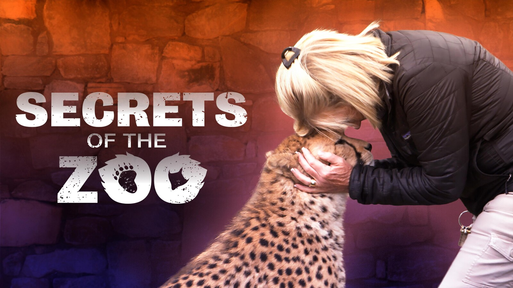

← Back to Home
Secrets of the Zoo
One of the largest and most popular zoos in the US, Ohio's renowned Columbus Zoo and Aquarium and its conservation park The Wilds, houses more than 10,000 animals on 12,000 acres. It's also the part-time home of beloved wildlife guru Jack Hanna, the zoo's director emeritus. Now, Nat Geo Wild is taking viewers inside the grounds and allowing them to experience what visitors can't: compelling, heartwarming stories, and behind-the-scenes moments and adventures. `Secrets of the Zoo' introduces both the animals and the legions of workers who create unforgettable connections between people and wildlife.